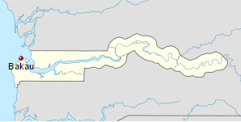

Coordinates: 13°29′N 16°41′W
About
Bakau is a town on the Atlantic coast of Gambia, west of Gambia's capital city of Banjul. It is known for its botanical gardens, its crocodile pool Bakau Kachikally and for the beaches at Cape Point. Bakau is the first major suburb outside Banjul and the most developed town in the Gambia. Close to Bakau and Banjul is Gambia's largest city, Serekunda.
History
Legend has it that Bakau grew up around the holy crocodile pool in Kachikally, the central district of Bakau. Bakau itself was a small village at the turn of the 19th century and grew in importance as it became a favourite place for private residences of colonial administrators, especially along the beautiful palm fringed beaches. Despite being a major town, the old village still exists and is run like any other in the Gambia, with an 'Alkali' (similar to 'Mayor') and divided into Kabilos. There exists a much smaller village within the old village called Bakau Wasulung Kunda, indicating the migrant origins of its inhabitants. As people began to move out of Banjul, government allocated residential areas quickly sprang around the old village, acquiring new names in the process. What were farms of the local population became well planned suburbs filled with bungalows, such as Fajara, New Town and Cape Point.
Economy
Tourism is the most important business activity in Bakau providing a lot of employment, as well as income for the municipal authority. At Cape Point there are a few hotels on a beach, arguably superior to the main Atlantic ocean beach, which is home to most of the hotels in the country. In town there are a few guest houses. There is also a major market along the main road famous for its fruit and vegetables. Most banks have branches there and several companies also maintain offices there.
Fishing is also another major business activity and there is a fishing port by the town beach, together with a wharf where a market attracts many visitors. One of the few ice plants in the country is located there. Afrinat International Airlines had its head office in Bakau.
Education
Bakau Primary school, established in 1947, is one of the oldest schools in the country. Today there are other lower basic schools as well a several high schools, both public and private. The Medical Research Council is also located within a fenced complex. The MRC has a long history in the Gambia and is a leading global centre of excellence in malaria research.
Coordinates: 13°27′11″N 16°34′39″W
About
Banjul, officially the City of Banjul and formerly known as Bathurst, is the capital of the Gambia and is in a division of the same name. The population of the city proper is only 34,828, with the Greater Banjul Area, which includes the City of Banjul and the Kanifing Municipal Council, at a population of 357,238 (2003 census).Banjul is on St Mary's Island (Banjul Island), where the Gambia River enters the Atlantic Ocean. The island is connected to the mainland to the west and the rest of Greater Banjul Area via bridges. There are also ferries linking Banjul to the mainland at the other side of the river.
Etymology
Banjul takes its name from the Mandé people who gathered specific fibres on the island, which were used in the manufacture of ropes. Bang julo is the Mandinka (Mande) word for rope fibre. The mispronunciation led to the word Banjul.
History
In 1651 Banjul was leased by The Duke of Courland and Semigallia (German: Herzog von Kurland und Semgallen) from the King of Kombo, as part of the Couronian colonization.
In 1816, the British founded Banjul as a trading post and base for suppressing the slave trade. The British renamed Banjul Island as St. Mary's Island and first named Bathurst after The 3rd Earl Bathurst, Secretary of State for War and the Colonies at the time. The name was changed to Banjul in 1973.
On 22 July 1994 Banjul was the scene of a bloodless military coup d'état in which President Sir Dawda Jawara was overthrown and replaced by the country's current President Yahya Jammeh. To commemorate this event, Arch 22 was built as an entrance portal to the capital. The gate is 35 metres tall and stands at the centre of an open square. It houses a textile museum.
Attractions in the city include the Gambian National Museum, the Albert Market, Banjul State House, Banjul Court House, African Heritage Museum, two cathedrals and several major mosques.
Economy
Banjul is the country's economic and administrative centre and includes the Central Bank of the Gambia. Peanut processing is the country's principal industry, but beeswax, palm wood, palm oil, and skins and hides are also shipped from the port of Banjul.
Banjul is also the home of the Gambia Technical Training Institute. GTTI is currently engaged in a partnership with non-profit organization Power Up Gambia to develop a solar energy training program.
Transport
As of May, 2014 ferries sail regularly from Banjul across the River Gambia to Barra. The city is served by the Banjul International Airport. Banjul is on the Trans–West African Coastal Highway connecting it to Dakar and Bissau, and will eventually provide a paved highway link to 11 other nations of the Economic Community of West African States (ECOWAS).
Coordinates: 13°26′N 14°39′W
About
Bansang is a town in the Central River Division of the Gambia, with a population of 6,966 (2003). Although the official government center of the Division is located in Janjanbureh downstream, Bansang has better access to the more affluent coastal region of the country, and is sometimes considered the unofficial "upcountry" economic capital.
The town is a market for peanuts, rice and fish.
Bansang is the location for the only government hospital in the interior regions of the country.
Coordinates: 13°19′N 14°13′W
About
Basse Santa Su, usually known as Basse, is a town in the Gambia, lying on the south bank of the River Gambia. The easternmost town in the nation, it is known for its important market. As of 2009 it has an estimated population of 18,414.
Coordinates: 13°16′N 16°39′W
About
Brikama is one of the largest cities in the Gambia, lying south of the country's capital, Banjul. Brikama is the headquarters of the Brikama Local Government Area (formerly the Western Division), being the largest city in the division with a population of over 57,000.
Brikama is known for wood carving and for its musicians. Local attractions include the Makasutu Culture Forest.
Brikama is also home to numerous educational institutions including The Gambia College, which trains the nation's teachers, and the Regional Education Office for the Western Region of the country. In addition, there are four Secondary Schools (Kinderdorf Bottrop, Kunte Kinte, Maahad, and Methodist Academy) as well as a number of basic cycle schools.
Coordinates: 13°23′N 16°45′W
About
Brufut, The Gambia is a town located in the Western Division of the Gambia. The town of Brufut is situated a couple of kilometres inland from the coastal road, but the name Brufut is applied to an area extending from around the town, out to the coast. It has a main street with a market, and some government offices, it is reached via a 'red' sandy unmade road from the coastal road, from Brusabi on one side to Ghana Town on the other side. The area is a fast developing location because of its highly developed infra structure. It is easy to reach from the capital, Banjul, the economic centre, Serrekunda, and the tourist area of the Sennegambia Strip by the AU Coastal Highway from the turntable in Brusabi going towards Tanjii and situated on a slight hill giving direct views to the unspoiled sandy beaches and the Atlantic Ocean.
Close to the coastline and opposite the Sheraton Hotel is a large (to be gated) estate - TAF Brufut Gardens, with large luxury villas for the well-off and includes several embassies, as well as guarded houses for ministers and the some members of the judiciary, approximately one third are occupied all year. The estate is very popular with UK expatriates. There will eventually be approximately 450 villas (parts of the estate are still under construction in 2013), that include three large apartment blocks and a brand new Shopping Mall. Next to this is another gated and guarded area of the estate known as the AU Village, which was constructed in early 2006 by the Gambia/Government and TAF Construction purposely to have a secure place to lodge the 52 presidents expected to attend the then 7th AU summit in the Gambia. Today these are used to lodge VIPs and are for sale to the general public. The area, this village is built on is next to a holy place called Sanmentereng. It has a long cultural background being a "holy" area where people came to in order to pray for their future hopes and wishes to come true.
Brufut also has one of the Gambia's finest hotels, the five-star Sheraton Gambia Resort, which overlooks a beautiful beach. The hotel with its well featured large conference facilities was one of the main locations for the 7th AU Summit, hosting the opening and closing ceremonies as well as the major sessions of the conference and lodging the presidents offices. Other hotels include Hibiscus House, located in the heart of the village of Brufut.
Nearby is the world famous Tanjii Bird Reserve (Tel. 9816799) with a small entrance fee and building a new visitors centre in 2013 this is an area well worth visiting, with its acres of scrubs and a coastal lagoon, housing hundreds of species of birds and some mammals. It links up to the Tanjii fishing village across the Tanjii river. Behind Brufut Town are the Brufut woods area also renowned for bird watching. Both these sites are extremely peaceful.
Coordinates: 13°34′N 15°36′W
About
Farafenni is a town in the Gambia, lying on the Trans-Gambia Highway in the North Bank Division, just south of the border with Senegal. It is an important market town.
The population of Farafenni is around 30,000 and the main local language is Wolof, although Mandinka, Fula and other languages are also fairly common.
Farafenni is the site of a recently built hospital and also contains a large military base which was attacked in 1995 by half-a-dozen men later claiming to be Sanyang's collaborators.
It is sometimes called Chakubanta or Faracity.
There is only one senior secondary school, called: Farafenni Senior Secondary School; two junior Secondary: Farafenni Junior Secondary School, and Angelican Junior Secondary School. Both located in the Outskirt of the town; and two primary Schools, namely: Farafenni Lower Basic School, and Mauritani Lower Basic School. Farafenni Upper Basic School is sponsored by John Cabot Academy in Bristol, UK.
Farafenni is a commercial town, were transactions are carried out in various commercial sectors. It has one big market situated opposite Farafenni Gamtel, and nearby there are shops and a small market on Kerewan Highway. Both markets serve the needs of the inhabitants. There is also a weekly market called lumo. The lumo place is located at the outskirts of the town, adjacent to the Farafenni Mini Stadium.
Coordinates: 13°32′2.87″N 14°45′58.15″W
About
Janjanbureh or Jangjangbureh is a town, founded in 1832, on Janjanbureh Island in the Gambia River in eastern Gambia. It was formerly known as Georgetown and was the second largest in the country. It is now the capital of the Central River Division and is best known as home to Gambia's main prison. The Wassu stone circles lie 22 km northwest of Lamin Koto, on the north bank across from Janjanbureh.
It is also noted for being the site of the first church in Gambia and the first high school, according to one expatriate who was born there.
The island is known locally as McCarthy Island, and is located in what used to be called McCarthy Island Division. The island is accessed by bridge from the south bank, and small boat ferries or government ferry on the north bank. In 1995, both the city of Georgetown and MacCarthy Island were renamed Janjanbureh respectively.
Janjanbureh is also the name of the district in which the town of Janjanbureh is located.
Coordinates: 13°20′19″N 16°22′57″W
About
Jufureh, Juffureh or Juffure is a town in the Gambia, located 30 kilometers inland on the north bank of the River Gambia in the North Bank Division near James Island. The town is home to a museum and Fort Jillifree.
Jufureh is best known for its appearance in Alex Haley's 1976 novel Roots: The Saga of an American Family. A family claiming to be the descendants of Kunta Kinte still resides here.
In 1651 a small plot of land from the village was leased by the Duke of Courland from the king of Kombo, as part of the Couronian colonization of Africa.
Coordinates: 13°15′N 15°50′W
About
Kalagi is a town located in the Western Division of the Gambia.According to a 2009 estimate around 825 inhabitants live there. The result of the last published census of 1993 609.
Coordinates: 13°11′N 16°01′W
History
Kanilai is a village in southern Gambia, near the border with Senegal. President of the Gambia Yahya Jammeh was born in this village and expanded it after coming to power. It is now home to a presidential palace, a wrestling arena and a game park and zoo.
Coordinates: 13°30′N 16°05′W
About
Kerewan is a town in the Gambia, Build by Mamadi Safiyatu Fatty some 400 years ago. Located beside the Miniminiyang Bolong, about 60 km from the capital Banjul. It is the Administrative headquarters of the North Bank Division.
Kerewan is the birthplace of Kitabu Kassama of University of West Georgia in Carrollton, Georgia. Kerewan has the following areas: Dinkareh, Banta SU, Korosumang and Area Council. Dinkareh used to have a very good soccer team called Cannon.
Since about 2005, efforts have been on-going by the Gambian President's International Award, Scottish Charity Gamscot and others to construct a Skills Centre to provide practical training for young Gambians in the town and surrounding area. As of May 2010, the building - which had been partially destroyed by storms on a number of occasions - was finally roofed and power supplied.
Coordinates: 13°27′N 16°43′W
About
Kololi is a resort town on the shore of the Atlantic Ocean in Gambia. It is surrounded by the Bijilo Forest.
The primary hotels are located on "The Strip" which is a short road leading to the beach and the hotels of Senegambia and the Kairaba. The Strip is lined with restaurants and entrance is monitored by the Gambian tourist police. A favorite with tourists, particularly from the UK, Belgium, Germany and The Netherlands.
Coordinates: 13°40′N 14°53′W
About
Kuntaur is a town located in the Central River Division of the Gambia.
Coordinates: 13.3511°N 16.4315°W
About
Lamin is a town located in the North Bank Division of the Gambia. It should not be confused with the larger city of Lamin located in the Western Division near the national capital, Banjul.
Coordinates: 13°23′N 16°39′W
About
Lamin is the largest village in Kombo NorthWestern Division of the Gambia. A village with two large clans, Bojang, and Manneh, as the founders, and all the rest are considered "lountan" meaning "strangers" in Manidinko. There is a village leader, "AlKalo" who is from the lineage of the Bojang. Until recently the village was divided into zones marked by tribes, the Mandinkos in Sateba, the Jolas in Sanchaba, the Manjako in Wayoto and all the other tribes in Temasu.
A second, small town named Lamin is located in the North Bank Division.

Coordinates: 13°28′N 15°33′W
About
Mansa Konko is a town in the Gambia, lying north of Soma. Formerly the home of an important chief. Mansa Konko translates as "the hill of kings" in Mandinka. It was later an administrative centre under the British, from which time some buildings survive.

Coordinates: 13°24′25″N 16°25′48″W
About
Nema Kunku is a village in Foni Jarrol district in the Western Division of the Gambia.
Nema kunku is a surrounding village of Gambia's largest town Serekunda. The population of the village is 99% local (Gambian) people.
Coordinates: 13°26′N 16°40′W
About
Serekunda is the largest urban centre in The Gambia.
Serekunda is known for its market, its silk cotton tree and its wrestling arena. The town's suburbs include the towns of Kanifing, Latrikunda, Sukuta and London Corner, and the town flows into the seaside resorts of Bakau, Fajara and Kotu.
Coordinates: 13°26′N 15°32′W
About
Soma is a town in the Gambia, lying south of the River Gambia. It is an important crossroads, where the main east-west road in the country crosses the Trans-Gambia Highway.
Coordinates: 13°25′N 16°42′W
About
Sukuta is a town located in the Western Division of the Gambia. It had a population of 16,667 as of the 1993 census.
Coordinates: 13°21′N 16°47′W
About
Tanji is a town in Gambia, along the Atlantic coast. It is primarily a fishing village, but it also has a popular museum, the Tanje Village Museum in which artisans and craftsmen engage in traditional crafts. The Tanji Bird Reserve is located 3 kilometers from the village.